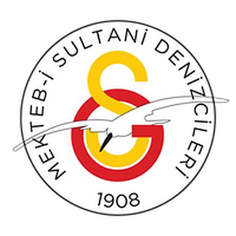

01
Teorik Dersler
Rüzgârı okumak, yelkeni trimlemek, tramola ve kavança: kara eğitimiyle başlayıp denizde uygulanan bir program.
Galatasaray Lisesi Denizcilik ve Yelken Kulübü; öğrencilerine denizcilik kültürünü kazandırmayı, yelken sporunu sevdirmeyi ve bu doğrultudaki faaliyetleri güvenli, verimli ve planlı bir yapıda sürdürmeyi amaçlayan aktif bir öğrenci kulübüdür. Kulüp faaliyetleri temel olarak teorik dersler, trofeler ve yarış ekibi organizasyonları olmak üzere üç ana eksen etrafında şekillenir. Hafta içi okul bünyesinde düzenlenen teorik derslerde temel denizcilik eğitimi verilirken, eğitim yılı boyunca en az dört kez düzenlenen trofelerle öğrenciler pratik denizcilik tecrübesi edinir. İlgili ve istekli üyeler arasından kurulan ve şahsi sporcu lisansları çıkartılan GSL Yelken Yarış Takımı düzenli antrenman ve yarışlarla okulu temsil eder.

KAPTANLAR
[AD SOYAD], [AD SOYAD]
DANIŞMAN ÖĞRETMENLER
[AD SOYAD]
ÜYE ÖĞRENCİ
[SAYI]
ETKİNLİK
[SAYI]
BULUŞMA
HER ÇARŞAMBA · 15.00
SOBİT AMFİSİ
01 — ROTA
Lise düzeyinde denizcilik ve yelken sporunu teorik eğitim, trofe seyirleri ve yarış takımı ekseninde en üst standartlarda yürüten öncü bir öğrenci kulübü olmak. Denizcilik geleneğiyle lise camiasında ve yelken sporunda örnek gösterilen bir kulüp kimliğini sürdürmek.
Galatasaray Lisesi öğrencilerine denizcilik temellerini ve yelken disiplinini hem teorik dersler hem de uygulamalı trofeler aracılığıyla güvenli bir biçimde aşılamak. Kapsayıcı bir yarış ekibi kurarak lisanslı sporcular yetiştirmek ve yarışmalarda liseyi başarıyla temsil etmek. Galatasaray'ın denizcilik mirasını ve geleneklerini dönemden döneme aktarmak.
02 — NELER YAPIYORUZ
01
Rüzgârı okumak, yelkeni trimlemek, tramola ve kavança: kara eğitimiyle başlayıp denizde uygulanan bir program.
02
Harita okuma ve seyir, denizci düğümleri, deniz meteorolojisi ve denizde güvenlik kuralları.
03
Okullar arası yarışlara hazırlık, takım içi antrenman yarışları ve yarış kurallarına giriş.
03 — Sezon Faaliyetleri · [2026–2027]
04 — GALERİ
05 — KULÜP HABERLERİ
06 — BELGELER